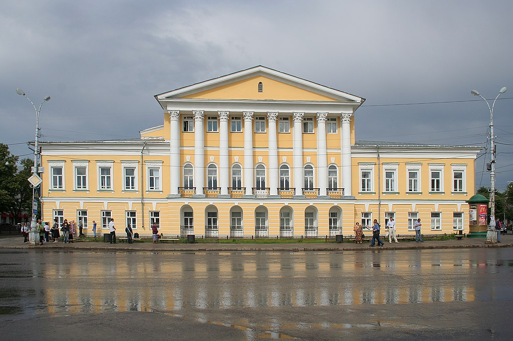

Кострома
Дом Борщова
В старой части города сохранилась историческая структура планировки (генеральный план города был утверждён императрицей Екатериной II в 1781 году). Основу планировки составляет лучевая сетка улиц, центр города раскрыт по отношению к Волге. Памятники провинциального классицизма составляют главную гордость Костромы. Среди построек времени Александра I примечателен ансамбль Сусанинской площади: здания гауптвахты и пожарной каланчи (архитектор П. И. Фурсов) и Присутственных мест (архитекторы А. Д. Захаров, Н. И. Метлин), дом С. С. Борщова (архитектор Н. И. Метлин). В начале Павловской улицы (ныне проспект Мира) интерес представляет здание в неорусском стиле Романовского музея (1909—1911, архитектор Н. И. Горлицын).
Ипатьевский монастырь. Троицкий собор.
Ключевым историческим памятником Костромы считается Ипатьевский монастырь. Впервые упоминается в летописи в 1432 году, но основан был значительно раньше — в 1330-х годах. Территория монастыря состоит из двух частей: Старого и Нового города. Оба участка обнесены высокими каменными зданиями. Старый город имеет форму неправильного пятиугольника. Композиционный центр монастыря — монументальный пятиглавый Троицкий собор и звонница.
Архитектурный ансамбль Ипатьевского монастыря
Троицкий собор (1586), (1650—1652)
Звонница (1603—1605)
Архиерейский корпус (XVIII в.)
палаты Романовых (XVI в.)
братский корпус (XVIII в.)
Также значимыми памятниками архитектуры и истории в Костроме являются Богоявленско-Анастасьинский монастырь и комплекс Торговых рядов.
